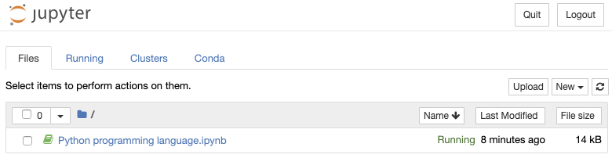
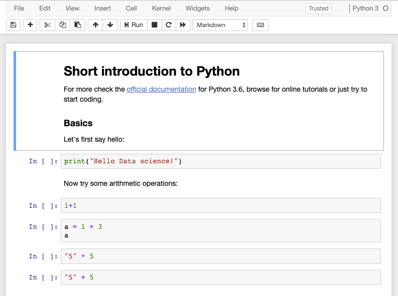

Chapter 1 Python programming language
1.1 Basic characteristics
Python is an interpreted, dynamically typed, object-oriented programming language.
Advantages:
- Simple.
- Easy to learn.
- Extensive packages.
- Cross-platform.
- Free and open source.
- Large user base.
Disadvantages:
- Being interpreted results in slower execution.
- Dynamic typing can lead to errors that only show up at runtime.
- Higher memory consumption, less suitable for memory-intensive tasks.
1.2 Why Python?
The Python language is one of the two most popular languages for data science (the other being R). The three main reasons are:
- The advantages of Python fit the typical data science workflow and its disadvantages are not that deterimental to the data science workflow.
- Python has a large ecosystem of packages, libraries and tools for data science, some of which are discussed later in this chapter.
- Often libraries and software developed in other languages provide Python API or bindings.
The typical data science workflow consists of acquiring and manipulating data and applying standard machine learning or statistical methods. In essence, the data flows through different methods. The emphasis is on obtaining results - extracting meaningful information from data.
The advantages of Python are extremely beneficial to such a workflow: Being simple, easy to learn and free, it is accessible to a larger user base, including users with little or no prior programming experience. Being an interpreted language (and straightforward piecewise execution through read-eval-print loop shells or REPL) makes Python very flexible - multiple alternatives can be explored and quick decisions made on how to procede, depending on intermediary results.
The disadvantages of Python are of minor consequence: The data science workflow is not time-critical - even an order-of-magnitude slowdown typically makes little difference. Memory and time consumption can be significantly decreased by using popular libraries such as numpy and scipy. Code maintainability is less important - data science scripts are often short and discarded after use. Specific platforms development or enterprise-level applications development are also not part of the typical data science workflow. Data science products used in such applications are normally rewritten as final models in a production-ready code.
That being said, Python is in most cases much more suitable than R in terms of development, maintainability, speed and other considerations that are relevant to in-production use. Python dominates R as the language of choice in industry projects where solutions have to be deployed, such as typical machine learning tasks. On the other hand, R dominates Python as the language of choice for data science consultants, government and not-for-profic organizations and academia.
1.3 Setting up the environment
Before using Python, we need to select and install a Python distribution. We can choose to install a pure Python distribution or an Anaconda Python distribution. Some advantages of using an Anaconda distribution are:
- Anaconda makes it easy for the user to install the Python version of choice. Anaconda will also resolve issues with administrator privileges if a user does not have administrative rights for his system.
- Anaconda Accelerate can provide the user with high performance computing and several other components.
- Anaconda removes bottlenecks involved in installing the right packages while taking into considerations their compatibility with various other packages as might be encountered while using the standard pip package manager.
- There is no risk of breaking required system libraries. There are also many open source packages available for Anaconda, which are not within the pip repository.
We encourage you to use the Anaconda Python distribution.
1.3.1 Anaconda distribution installation
Install the desired Anaconda Python distribution. A useful way of managing multiple Python projects is to use Conda environments. An environment enables you to use a specific version of Python along with specific dependencies completely separately on a single system. To create and use an environment named ids, issue the following command:
$ conda create -n ids
$ conda activate idsAt the beginning of a line in the console you can see currently active environment. To run Python within this evironment, issue the python command in the console. You should see something similar to the following:
(ids)$ python
Python 3.6.8 |Anaconda, Inc.| (default, Dec 29 2018, 19:04:46)
[GCC 4.2.1 Compatible Clang 4.0.1 (tags/RELEASE_401/final)] on darwin
Type "help", "copyright", "credits" or "license" for more information.
>>>To exit the Python interpreter, enter and commit the command exit();
To exit the environment, use conda deactivate. To show existing environments and their locations, issue conda info --envs.
1.3.2 Pure Python distribution installation
You can also install a pure Python distribution directly to your system from the official Python Downloads web page.
To run Python, issue the python command in the console (there may be more interpreters installed on your machine and Python 3.5 might be run also using python3.5). After running the command, you should see something similar to the following:
$ python
Python 3.5.2 (v3.5.2:4def2a2901a5, Jun 26 2016, 10:47:25)
[GCC 4.2.1 (Apple Inc. build 5666) (dot 3)] on darwin
Type "help", "copyright", "credits" or "license" for more information.
>>>When using the distribution directly, all packages and settings are changed system-wide, which may lead to problems when maintaining multiple Python projects (e.g. problems in having installed different versions of a specific library). Similar to an Anaconda distribution, one can use virtualenv virtual environments. First, we need to install virtualenv via pip:
$ pip3 install virtualenv
$ virtualenv --version
16.6.1To set up a virtual environment for a project first create a project folder and set up a new environment in that folder. The latter will create Python executables within that folder and a copy of the pip library that is used to install libraries local to the environment (parameter p is optional).
$ cd ids_project
$ virtualenv -p /usr/local/bin/python2 idsTo activate the environment, run the script venv/bin/activate from the project folder and use project specific Python:
$ source ids/bin/activate
(ids)$ python
Python 2.7.14 (default, Mar 9 2018, 23:57:12)
[GCC 4.2.1 Compatible Apple LLVM 9.0.0 (clang-900.0.39.2)] on darwin
Type "help", "copyright", "credits" or "license" for more information.
>>>After you finish working on your project, deactivate the current virtual environment:
(ids)$ deactivate
$1.4 Installing dependencies
An Anaconda distribution provides its own package repository and Anaconda packages can be installed as follows:
$ conda install nltkIf a package is not available in the official repository, it may be available from some private or community-led channels, for example conda-forge:
$ conda install -c conda-forge pysparkMany useful libraries are available online, mostly in the Python Package Index (PyPI) repository, which can also be used directly in a conda environment. Well-built libraries consist of installation instructions and a setup.py installation file. The common location for installing libraries is the folder %PYTHON_BASE%/lib, %PYTHON_BASE%/site-packages or %PYTHON_BASE%/Lib.
Packages can be installed using the pip command. For example, to install the NLTK library, we issue the following command:
$ pip install nltkIn some cases packages will be prebuilt for a specific OS, because the installation of its dependencies can be tedious. In such cases, wheel packages can be provided and installed using the following command:
$ pip install YOUR_DOWNLOADED_PACKAGE.whl1.5 Jupyter notebooks
The Jupyter Notebook is an open-source web application that allows you to create and share documents that contain live code, equations, visualizations and narrative text. Uses include: data cleaning and transformation, numerical simulation, statistical modeling, data visualization, machine learning and much more.
To add support for Anaconda environments to Jupyter, issue the command below. This will add Conda extensions to Jupyter. The feature will be installed for currently active environment. When running Jupyter, you will notice a Conda tab in the file browser, which will enable the listing and selection of existing Anaconda environments, overview of the installed packages in the environment, installing new packages from the available package list, checking for updates packages and updating packages in the environment.
$ conda install nb_conda1.5.1 Running a Jupyter notebook
Prior to running a Jupyter notebook we first need to start a Jupyter web server by issuing a command:
$ jupyter notebookBy default the server is started in the current folder and accessible via the web interface: http://localhost:8888. The root web page shows a file browser where we can create a new Jupyter notebook or open an existing one:

To get a similar view, save the provided Jupyter notebook into the folder where you run jupyter notebook command. Click the filename of the notebook and it will open in a new window:

As you notice, a notebook consists of linearly ordered blocks of types Markdown, Code, Raw NBConvert and Heading. If you double click a text block you can edit it using Markdown syntax. To evaluate the block again and show rendered view, click the Run button or press Alt+Enter. The same holds for other types of blocks.
Sometimes we just want to view or execute a notebook online. There exist multiple services offering this functionality, for example https://gke.mybinder.org/.
1.6 A short introduction to Python
All the examples presented in this section are also provided in a Jupyter notebook.
Basics
Let’s first say hello:
print("Hello Data science!")## Hello Data science!Now we know how to print something to the output. Before we dive into details, let’s first check how we can easily output literal values and variables. Let’s have a variable name and age with specific values and form a form a final string to show to a user.
name = "Mark"
age = 42
# Basic old-style string concatenation
print("Hi, I am " + name + " and I am " + str(age) + " years old.")
# %-formatting
print("Hi, I am %s and I am %d years old." % (name, age))
# Cleaner syntax using format function
print("Hi, I am {} and I am {} years old.".format(name, age))
# Format function with extended features of parameter naming and output formatting
print("Hi, I am {name} and I am {age:3d} years old.".format(age=age, name=name))
# Same features as format function with evaluations directly within curly braces
print(f"Hi, I am {name} and I am {age:3d} years old")
# Another example
f = 91
print(f"{f:.2f} Fahrenheit is {(f - 32) * 5 / 9:.2f} Celsius")## Hi, I am Mark and I am 42 years old.
## Hi, I am Mark and I am 42 years old.
## Hi, I am Mark and I am 42 years old.
## Hi, I am Mark and I am 42 years old.
## Hi, I am Mark and I am 42 years old
## 91.00 Fahrenheit is 32.78 CelsiusThe last example seems the most readable and we will use it from now on. It is also called f-string and you can read more about its features in the official documentation about literal string interpolation.
1.6.0.1 Variables and types
Python defines whole numbers (int, long) and real numbers (float). Whole numbers are integers (\(\pm 2^{31}\) or \(\pm 2^{63}\)) and long numbers, limited by the memory size. Long is a number with a trailing L added at the end (Python 2, in Python 3, long is merged with int). Complex numbers are also supported using a trailing j to the imaginary part. Bool type is based on integer - value of 1 is True and value of 0 is False. For the boolean expressions, integer value of 1 will be interpreted as True and all other values as False.
String values are represented as sequence of characters within " or '.
A constant None is defined to represent the nonexistence of a value.
a = 2864
print(f"Type of a is {type(a)}")
b = 18+64j
print(f"Type of c is {type(b)}")
c = False
print(f"Type of d is {type(c)}")
d = "I'm loving it!"
print(f"Type of e is {type(d)}")
e = None
print(f"Type of f is {type(e)}")## Type of a is <class 'int'>
## Type of c is <class 'complex'>
## Type of d is <class 'bool'>
## Type of e is <class 'str'>
## Type of f is <class 'NoneType'>Numbers and basic operators
Basic data manipulations:
a = 3
b = 2.5
c = a + b
print(f"Addition: {c}")
c = a * b
print(f"Multiplication: {c}")
c = a / b
print(f"Division: {c}")
c = True + 5
print(f"Addition to Boolean: {c}")
c = "5" * 5
print(f"String multiplication: {c}")## Addition: 5.5
## Multiplication: 7.5
## Division: 1.2
## Addition to Boolean: 6
## String multiplication: 555551.6.0.2 Strings, concatenation and formatting
Basic strings manipulations:
a = "Data science"
b = 'a multi-disciplinary field' # we can use double or single quotes
c = a + " " + b
print(f"Concatenated string: '{c}'")
first = c[:4]
last = c[-5:]
print(f"First word: '{first}' and last word: '{last}'.")
firstLower = first.lower()
lastUpper = last.upper()
print(
(f"First word lowercased: '{firstLower}'"
f"and last word uppercased: '{lastUpper}'.")
)
management = c.replace("science", "management")
print(f"Substring replacement: '{management}'")## Concatenated string: 'Data science a multi-disciplinary field'
## First word: 'Data' and last word: 'field'.
## First word lowercased: 'data'and last word uppercased: 'FIELD'.
## Substring replacement: 'Data management a multi-disciplinary field'Explore more about strings in the official Python 3 documentation for strings.
# string package
import string
print(f"Punctuation symbols: '{string.punctuation}'")## Punctuation symbols: '!"#$%&'()*+,-./:;<=>?@[\]^_`{|}~'String manipulation is essential for parsing and providing machine readable outputs when needed. Below we show additional two examples of how to set print length of a variable using f-string method. For more sophisticated examples, see https://pyformat.info/ - f-string method is the new equivalent of the format method.
number = 6/.7
text = "dyslexia"
format0 = f"Number: {round(number*100)/100.0}, Text: {' '*(15-len(text))} {text}"
print(format0)
format1 = f"Number: {number:5.2f}, Text: {text:>15}"
print(format1)## Number: 8.57, Text: dyslexia
## Number: 8.57, Text: dyslexia1.6.0.3 Data stuctures: Lists, Tuples, Sets, Dictionaries
Below we create some of the data structures available in Python. Explore more of their functionality in the official Python documentation.
l = [1, 2, 3, "a", 10] # List
t = (1, 2, 3, "a", 10) # Tuple (immutable)
s = {"a", "b", "c"} # Setdict = {
"title": "Introduction to Data Science",
"year": 1,
"semester": "fall",
"classroom": "P02"
}
dict["classroom"] = "P03" We often use inline functions to map, filter or calculate values on an iterable data structure. For example, to apply a function to all values (map), filter out unnecessary values or use all values in a calculation:
# Python 3 import for reduce (not needed for Python 2)
from functools import reduce
l = [6, 8, 22, 4, 12]
doubled = map(lambda x: x*2, l)
print(f"Doubled: {doubled}")
filtered = filter(lambda x: x > 10, l)
print(f"Filtered: {filtered}")
sum = reduce(lambda x, y: x+y, l)
print(f"Sum value: {sum}")## Doubled: <map object at 0x103dd2f50>
## Filtered: <filter object at 0x103dd2cd0>
## Sum value: 52Functions filter, reduce and map create a generator since Python 3. Generators enable declaring functions that behaves like an iterator. To print all the values of the aobve generator objects, we need to evaluate them, for example transform them into a list.
print(f"Doubled: {list(doubled)}")
print(f"Filtered: {list(filtered)}")## Doubled: [12, 16, 44, 8, 24]
## Filtered: [22, 12]In comparison to generators we propose to use list comprehension on iterable types, which is more readable and also faster.
l = [6, 8, 22, 4, 12]
newList = [x**2 for x in l if x >= 5 and x <= 10]
print(f"Squared values between 5 and 10: {newList}")Squared values between 5 and 10: [36, 64]Sometimes we would like to generate a repeated sequence of select (i.e. slice) only specific values from a string, bytes, tuple, list or range. Slice object represents the indices specified by range(start, stop, step):
l = list(range(10))
print(f"List: {l}")
slice_indexes = slice(2,8,2)
print(f"Sliced list: {l[slice_indexes]}")List: [0, 1, 2, 3, 4, 5, 6, 7, 8, 9]
Sliced list: [2, 4, 6]1.6.1 Flow control
Many operations can be written inline or using multiple lines. Let’s check how to use if statements and loops.
a = 2
if a > 1:
print('a is greater than 1')
elif a == 1:
print('a is equal to 1')
else:
print('a is less than 1')## a is greater than 1# Inline if statement
a = 2
print('a is greater than 1' if a > 1 else 'a is lower or equal to 2')## a is greater than 1Loops:
for i in range(4, 6):
print(i)## 4
## 5people_list = ['Ann', 'Bob', 'Charles']
for person in people_list:
print(person)## Ann
## Bob
## Charlesi = 1
while i <= 3:
print(i)
i = i + 1## 1
## 2
## 31.6.2 Functions
We organize (encapsulate) our code into logical units, so we can reuse them and reduce the amount of duplicate, boilerplate code. Below write the function greetMe that takes one argument (name) as input and prints some string. The function’s code will be executed when we call the function.
def greetMe(name):
print(f"Hello my friend {name}!")
greetMe("Janez")## Hello my friend Janez!Sometimes our functions will have many arguments, some of which might be optional or have a default value. In the example below we add a argument with a default value. If there are multiple optional arguments we can set their values by naming them.
def greet(name, title = "Mr."):
print(f"Hello {title} {name}!")
greet("Janez")
greet("Mojca", "Mrs.")
greet("Mojca", title = "Mrs.")## Hello Mr. Janez!
## Hello Mrs. Mojca!
## Hello Mrs. Mojca!A function can also call itself and return a value.
def sumUpTo(value):
if value > 0:
return value + sumUpTo(value-1)
else:
return 0
print(f"Sum of all positive integers up to 50 is: {sumUpTo(50)}")## Sum of all positive integers up to 50 is: 1275Functions can also return multiple values in a tuple. Tuple can be then also automatically unpacked into separate values:
def calculateHealth(height_cm, weight_kg, age, gender = 'male'):
# Body mass index
bmi = weight_kg/(height_cm/100)**2
# Basal metabolic rate (Revised Harris-Benedict Equation)
bmr = 0
# Ideal body weight
ibw = 0
if gender == 'male':
bmr = 13.397*weight_kg + 4.799*height_cm - 5.677*age + 88.362
ibw = 50 + (0.91 * (height_cm - 152.4))
else:
bmr = 9.247*weight_kg + 3.098*height_cm - 4.330*age + 447.593
ibw = 45.5 + (0.91 * (height_cm - 152.4))
return (bmi, bmr, ibw)
janez_health = calculateHealth(184, 79, 42)
(bmi, bmr, ibw) = calculateHealth(178, 66, 35, 'female')
print(f"Janez:\n\tBMI: {janez_health[0]}\n\tBMR: {janez_health[1]}\n\tIBW: {janez_health[2]}")
print(f"Mojca:\n\tBMI: {bmi}\n\tBMR: {bmr}\n\tIBW: {ibw}")Janez:
BMI: 23.334120982986768
BMR: 1791.3070000000002
IBW: 78.756
Mojca:
BMI: 20.830703194041156
BMR: 1457.7890000000002
IBW: 68.79599999999999Python encapsulates variables within functions - they are not accessible outside the function. When we want variables to be accessible globally, we can use the global keyword. This can result in some difficulties to predict behaviour and interactions, so use with caution!
def playWithVariables(value1, list1):
global globVal
globVal = 3
value1 = 10
list1.append(22)
print(f"Within function: {value1} and {list1} and {globVal}")
value1 = 5
list1 = [3, 6, 9]
print(f"Before function: {value1} and {list1}")
playWithVariables(value1, list1)
print(f"After function: {value1} and {list1} and {globVal}")## Before function: 5 and [3, 6, 9]
## Within function: 10 and [3, 6, 9, 22] and 3
## After function: 5 and [3, 6, 9, 22] and 3In some cases we can also define functions that accept an arbitrary number of unnamed (args) and/or named (kwargs) arguments.
def paramsWriter(*args, **kwargs):
print(f"Non-named arguments: '{args}'\nNamed arguments: '{kwargs}'")
paramsWriter(1, "a", [1,5,6], studentIds = [234, 451, 842], maxScore = 100.0)## Non-named arguments: '(1, 'a', [1, 5, 6])'
## Named arguments: '{'studentIds': [234, 451, 842], 'maxScore': 100.0}'When naming functions, classes, objects, packages, etc. we need to be careful not to overwrite existing objects. Bugs such as this one can be difficult to find:
def greeter():
print("Hello to everyone!")
greeter()
greeter = "Mr. John Hopkins"
greeter() # Error - greeter is now string valueHello to everyone!
Traceback (most recent call last):
File "<stdin>", line 1, in <module>
TypeError: 'str' object is not callable1.6.3 Classes and objects
Python is also object-oriented and therefore enables us to encapsulate data and functionality into classes. Instances of classes are objects.
The class below consists of one class variable, one class method, three object methods and two object variables. All class-based variables are accessible using the class name directly without having instantiated the object. Object-based methods are accessible only through an instantiated object and can also directly modify object properties (self.*). All object methods accept self as an implicit parameter, which points to the current object.
Below we show an example of object declaration and its use. A detailed explanation can be found in the official Python documentation.
class Classroom:
class_counter = 0
def num_classes():
return Classroom.class_counter
def __init__(self, name):
Classroom.class_counter += 1
self.name = "Best of Data Science class " + name
self.students = []
def enroll(self, student):
self.students.append(student)
def __str__(self):
return f"Class: '{self.name}', students: '{self.students}'"class1 = Classroom("best of millenials")
class2 = Classroom("old sports")
print(f"Num classes: {Classroom.class_counter}")
print(f"Num classes: {Classroom.num_classes()}")
class2.enroll("Slavko Žitnik")
class2.enroll("Erik Štrumbelj")
class2.enroll("Tomaž Curk")
print(class2)## Num classes: 2
## Num classes: 2
## Class: 'Best of Data Science class old sports', students: 'Slavko Žitnik, Erik Štrumbelj, Tomaž Curk'1.6.4 Reading and writing files
Sometimes the data is stored in a well-formatted file which we must read. Also, it is expected that we output results into a file, so let’s check how to read and write to files using Python.
To open a file, call function open(FILENAME, MODE). The function returns handle to work with a file. We must select the mode type which can be one of:
- r - reading only,
- w - writing to a file (previous content will be deleted),
- x - creating a new file (function fails of a file already exists),
- a - appending to a file,
- t - opening a file in text mode,
- b - opening a file in binary mode and
- + - opening a file for reading and writind (updating).
Writing content to a file:
file = open("ids.txt","w+")
for i in range(10):
file.write(f"This is line {i}.\r\n")
file.close()Reading content (output omitted):
#Open the file and read the contents
file = open("ids.txt", "r")
# Reading the whole content into a variable
contents = file.read()
# Reading file into a list of lines
file.seek(0) #Move to the beginning as we already readt the whole file
lines = file.readlines()
# Reading line by line
file.seek(0)
for line in file:
print(line)It is also useful to read and write JSON data directly. Python can automatically write and read JSON files for built-in objects:
import json
json_obj = {'name': 'Janez', 'age': 'Novak', 'marks': [{'OPB': 8, 'IDS': 6, 'WIER': 10}]}
# Write json to a file
json.dump(json_obj, open('json_output.json', 'w'))
# Read json to a variable from file
janez = json.load(open('json_output.json', 'r'))
print(janez)## {'name': 'Janez', 'age': 'Novak', 'marks': [{'OPB': 8, 'IDS': 6, 'WIER': 10}]}1.6.5 Python IDE’s and code editors
An IDE (Integrated Development Environment) is software dedicated to software development. As the name implies, IDEs integrate several tools specifically designed for software development. These tools usually include:
- An editor designed to handle code with features such as syntax highlighting and auto-completion.
- Build, execution and debugging tools.
- Some form of source control support.
IDEs are generally large and take time to download and install. You may also need advanced knowledge to use them properly. In contrast, a dedicated code editor can be as simple as a text editor with syntax highlighting and code formatting capabilities. Most good code editors can execute code and control a debugger. The very best ones interact with source control systems as well. Compared to an IDE, a good dedicated code editor is usually smaller and quicker, but often less feature rich.
Below we list some popular Python IDEs/code editors that are available for major operating systems (Windows, Linux and Mac OS):
- IDLE - the default code editor that installs together with the Python distribution. It includes a Python shell window (interactive interpreter), auto-completion, syntax highlighting, smart indentation and a basic integrated debugger. We do not recommend it for larger projects.
- Sublime Text, Atom, Visual Studio Code - highly customizable code editors with rich features of an IDE. They support installation of additional extensions and also provide intelligent code completion, linting for potential errors, debugging, unit testing and so on. These editors are becoming quite popular among Python and web developers.
- PyCharm - an IDE for professional developers. There are two versions available: a free Community version and a paid Professional version which is free for students only. PyCharm provides all major features of a good IDE: code completion, code inspections, error-highlighting and fixes, debugging, version control system and code refactoring, etc..
1.7 Python ecosystem for Data Science
The Python ecosystem of libraries, frameworks and tools is large and ever-growing. Python can be used for web scraping, machine learning, general scientific computing and many other computing and scripting uses. We list some of the most widely used libraries in the field of data science.
- NumPy - NumPy is the fundamental package for scientific computing with Python. The tools that we commonly use are: a powerful N-dimensional array object, sophisticated (broadcasting) functions, tools for integrating C/C++ and Fortran code and most importantly, linear algebra, Fourier transform and random number capabilities. NumPy can also be used as an efficient multi-dimensional container of generic data, where arbitrary data-types can be defined.
- Matplotlib - A 2D plotting library which produces publication quality figures in a variety of hardcopy formats and interactive environments across platforms. Matplotlib can be used in Python scripts, Python and IPython shells, Jupyter notebooks and web application servers. We can generate plots, histograms, power spectra, bar charts, errorcharts, scatterplots, etc., with just a few lines of code. It provides a MATLAB-like interface, particularly when combined with IPython. It gives users full control of line styles, font properties, axes properties, etc.
- SciPy - "Sigh Pie is a Python-based ecosystem of open-source software for mathematics, science and engineering. In particular, it connects the following core packages: NumPy, SciPy library (fundamentals for scientific computing), Matplotlib, IPython, Sympy (symbolic mathematics) and Pandas.
- scikit-learn - a Machine Learning (ML) library in Python. It provides simple and efficient tools for data analysis. It offers a framework and many algorithms for classification, regression, clustering, dimensionality reduction, model selection and preprocessing. The library is open source and build on NumPy, SciPy and matplotlib.
- Pandas - Python Data Analysis Library (pandas) is an open source, BSD-licensed library providing high-performance, easy-to-use data structures and data analysis tools for the Python programming language. Some of the library highlights are a fast and efficient DataFrame object for data manipulation with integrated indexing, tools for reading and writing data between in-memory data structures and different formats, intelligent data alignment and integrated handling of missing data, flexible reshaping and pivoting of data sets, high performance merging and joining of data sets, an intuitive way of working with high-dimensional data in a lower-dimensional data structure, time series-functionality.
- TensorFlow - TensorFlow is an end-to-end open source platform for machine learning in the field of deep learning. It has a comprehensive and flexible ecosystem of tools, libraries and community resources that lets researchers push the state-of-the-art in ML and developers to easily build and deploy ML powered applications.
- Keras - Compared with TensorFlow, Keras is a high-level neural networks API, written in Python and capable of running on top of TensorFlow, CNTK or Theano backends. It was developed with a focus on enabling fast experimentation, being able to go from idea to result with the least possible delay. Keras allows for easy and fast prototyping (through user friendliness, modularity and extensibility), supports both convolutional networks and recurrent networks, as well as combinations of the two and runs seamlessly on CPU and GPU.
1.8 Further reading and references
Here is a list of more comprehensive guides to Python programming:
- Fluent Python: Clear, Concise, and Effective Programming
- Official Python Tutorials - Tutorial accompanying official Python documentation. See this resource for latest features.
- Beginning Python by Magnus Hetland - The book is written for beginners but last chapters are useful also for more experienced programmers.
- Non-Programmer’s Tutorial for Python - a well organized Wikibook.
- Think Python - similar book to the previous one, but a bit more intermediate.
- [Wikibook: Programming Python] - similar to the above two with more advanced topics.
- How to Think Like a Computer Scientist - well organized sections for self-paced learning.
- Python za programerje by Janez Demšar - Well known Slovene book, written by the professor at our Faculty. You can find electronic versions online, but printed version is accessible to buy at publishing house FRI (at the entrance).
1.9 Learning outcomes
Data science students should work towards obtaining the knowledge and the skills that enable them to:
- Use the Python programming language for simple programming tasks, data manipulation and file I/0.
- Identify the Python IDE(s) that best fit their requirements.
- Find suitable Python packages for the task at hand and use them.
- Recognize when Python is and when it is not a suitable language to use.
1.10 Practice problems
- Install Anaconda Python, run the provided Jupyter notebook within a new conda environment and then export all the installed dependencies into an environment.yml file (see reference). Check the file, remove not needed data (location, library versions, libraries in lower dependency trees), create a new environment based on the exported file and run the notebook again (it should work without the need to install additional packages manually).
- Try different Python IDEs and form a personal opinion of their advantages and disadvantages.
- Download, explore and run some scripts from the Keras examples repository.
- Download the CMU Seminar Announcements dataset and uncompress it. The dataset consists of multiple files, whereas each file represents a seminar announcement. Write a program that reads every file and tries to extract the speaker, title, start-time, end-time and the location of the seminar. Help yourself with regular expressions and libraries mentioned above. Store all the extracted data into a Pandas data frame and lastly, export all the data into a single CSV file. In addition, compute your success rate in extraction of specific fields based on the manual tags from the documents.
- Go through Pandas showcase and practise using the library as it allows for powerful features.